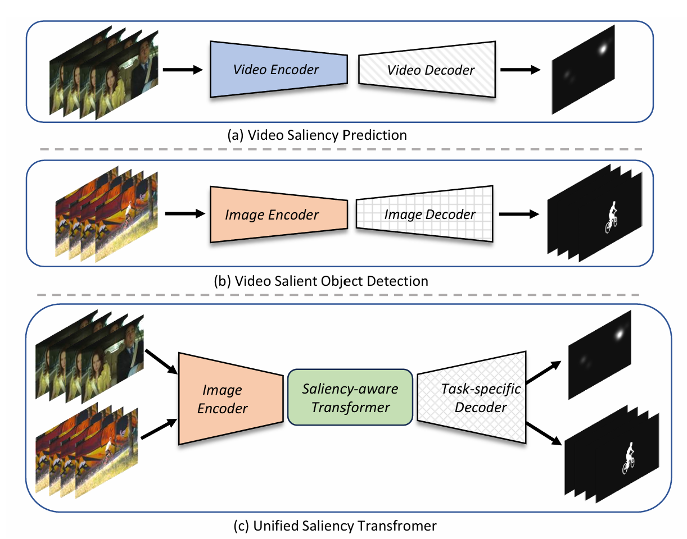
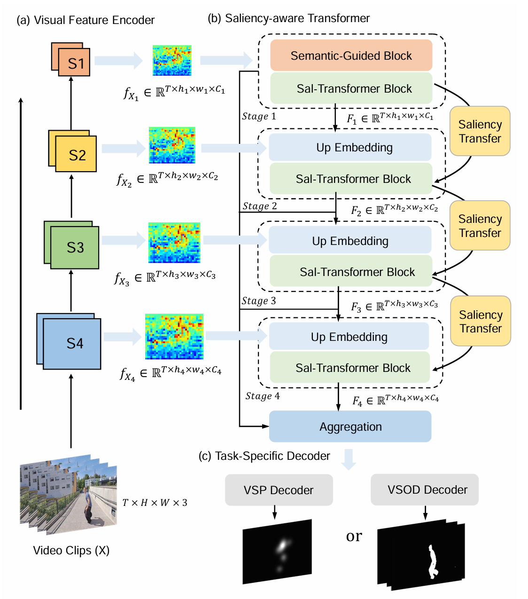

Video saliency prediction and detection are thriving research domains that enable computers to simulate the distribution of visual attention akin to how humans perceive dynamic scenes.
While many approaches have crafted task-specific training paradigms for either video saliency prediction or video salient object detection tasks, few attention has been devoted to devising a generalized saliency modeling framework that seamlessly bridges both these distinct tasks.
In this study, we introduce the Unified Saliency Transformer (UniST) framework, which comprehensively utilizes the essential attributes of video saliency prediction and video salient object detection.
In addition to extracting representations of frame sequences, a saliency-aware transformer is designed to learn the spatio-temporal representations at progressively increased resolutions, while incorporating effective cross-scale saliency information to produce a robust representation.
Furthermore, task-specific decoders are proposed to perform the final prediction for each task.
To the best of our knowledge, this is the first work to explore the design of a unified framework for both saliency modeling tasks.
Convincible experiments demonstrate that the proposed UniST achieves superior performance across eight challenging benchmarks for two tasks, outperforming other state-of-the-art methods in most metrics.
Method
The VSP and VSOD adopt video encoder and image encoder respectively as feature extractors, followed by corresponding decoders. Differently, a unified saliency transformer directly applies an image encoder for feature processing, and follows a transformer structure for spatio-temporal modeling, and finally uses different decoders for different tasks.

An overview of the proposed UniST. The visual feature encoder learns frame-wise visual representations from the video clips.
The multi-scale visual features are then used as inputs to the saliency-aware transformer for global spatio-temporal modeling, generating refined and scaled-up spatio-temporal features for final prediction.
The saliency transfer mechanism gathers the attention scores in each transformer stage and uses them to improve saliency prediction as well as salient object detection.

Results
Qualitative results of our method compared with other state-of-the-art methods on VSP and VSOD tasks.